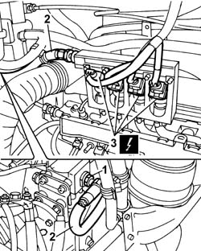
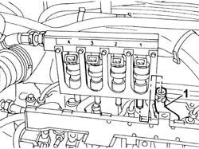
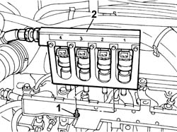

1058A60 SINGLE CNG MANIFOLD PIPE COMPLETE WITH INJECTORS - R R
- Path
- Procedures > 10 ENGINE UNIT > 1058 GAS CIRCUIT > 1058A GAS CIRCUIT MULTI POINT INJECTION > 1058A60 SINGLE CNG MANIFOLD PIPE COMPLETE WITH INJECTORS - R R
- Kind
- repair procedure (removal / refitting; the operation number is the code)
- Applies to
- engines: 2.0 16V; all production periods
- Interactive page
- https://sloeber94.github.io/elrnDB-fDct/en/#/244000820
Applies to: engines: 2.0 16V; all production periods
 Removing
Removing
 Refitting
RefittingDrain the low pressure circuit as described in the operation:
Op. 1042A02 C.N.G. - FUEL SYSTEM SAFETY CHECK
Disconnect the negative battery terminal.
1. Unscrew the pressure reduction unit connector.
2. Disconnect the low pressure hose from the reduction unit.
3. Disconnect the electrical connections for the injectors.
Description | Connector | |
|---|---|---|
3 | Methane injector | N070A |
Description | Connector | |
|---|---|---|
3 | Methane injector | N070B |
Description | Connector | |
|---|---|---|
3 | Methane injector | N070C |
Description | Connector | |
|---|---|---|
3 | Methane injector | N070D |

Applies to: engines: 2.0 16V; all production periods
1. Remove the bands on the injector side methane pipes and remove the pipes from the injectors.

Applies to: engines: 2.0 16V; all production periods
1. Undo the bolts securing the CNG manifold pipe to the mounting bracket.
2. Remove the CNG single manifold pipe from the engine bay.

Applies to: engines: 2.0 16V; all production periods
Refitting
RemovingFit the single CNG manifold pipe into its seat on the bracket in the engine bay.
Tighten the bolts securing the CNG manifold pipe to the mounting bracket.
Use the bands to connect the methane pipes to the injectors.
Connect the electrical connections for the CNG injectors.
Description | Connector | |
|---|---|---|
- | Methane injector | N070A |
Description | Connector | |
|---|---|---|
- | Methane injector | N070B |
Description | Connector | |
|---|---|---|
- | Methane injector | N070C |
Description | Connector | |
|---|---|---|
- | Methane injector | N070D |
Connect the low pressure hose to the reduction unit and tighten the connector.
Value daNm | Fastening | Component | Ø | |
|---|---|---|---|---|
- | 2.8 | Connector | - | - |
Connect the negative battery terminal.
Move the CNG cut-off solenoids on the cylinders to open position by hand and check system is efficient.